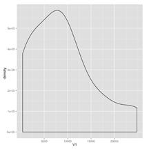

Let's set up a new data analysis project using ProjectTemplate.
Before we start, you should make sure that you've installed ProjectTemplate. You'll also need to download the sample data set we'll use, letters.csv.bz2.
Once you've got both of those things done, you can open up R and type
library('ProjectTemplate')
create.project('letters')
You can now exit R and change into the directory letters that you just set up:
cd letters
Once you're in the letters directory, you can open up your new project in your favorite text editor. I like using TextMate as an editor, since it will show the structure of our entire project in a sidebar:
mate .
As you can see, create.project() has set up a whole series of subdirectories for us. We'll see what each of these does as we move on. For now, let's just pull in that data file letters.csv.bz2 that you downloaded earlier. We'll place it into the data directory:
mv ~/Downloads/letters.csv.bz2 data
With the letters.csv.bz2 data set in place, we can start to use ProjectTemplate's automated data loading features. Open up R again and type the following:
library('ProjectTemplate')
load.project()
You'll see ProjectTemplate print out a bunch of messages:

Among the messages above, you'll notice that the letters data set was automatically loaded into memory. How did ProjectTemplate do this?
It's simple: ProjectTemplate searches through the data directory for files. If a file has a name like NAME.EXTENSION with a recognized extension such as .csv or .sql, ProjectTemplate will automatically load the data described in that file into memory. Generally, the automatically loaded data set will end up in an R data frame called NAME that will be placed in R's global environment. If you're not sure if your data set will be automatically loaded by ProjectTemplate, you can check the full list of currently supported filetypes here.
The letters data set takes a few seconds to load into R because it contains 233,614 rows. You can get a feel for it by looking at the head() of the data:
head(letters)

As you can see, we've got a data frame that contains 233,614 words along with the first and second letter of each word in a separate column. For our current analysis, we're interested in the total number of occurrences of each letter in the first and second letter positions and not in the words themselves. For that reason, we can generate aggregate letter counts using the ddply() function from the plyr package. Wanting to work with aggregate counts instead of the raw data set we stored in data naturally leads us to ProjectTemplate's automatic package loading and data munging tools.
To use plyr, we need to load the package. ProjectTemplate makes it easy to automate this step. First, we have to edit the config/global.dcf file to make sure that the load_libraries setting is turned on:
load_libraries: on
Second, we need to make sure that the plyr package will be loaded automatically when we run load.project(). To do that, we check that the value of the libraries configuration setting contains plyr. We see that it does list plyr, along with reshape, ggplot2, stringr and lubridate:
libraries: reshape, plyr, ggplot2, stringr, lubridate
After checking these settings, we know that we have the proper tools in place to compute aggregates. To make sure that this aggregation preprocessing step takes place as soon we run load.project(), we edit the munge/01-A.R script so that it contains the following two lines of code:
first.letter.counts <- ddply(letters, c('FirstLetter'), nrow)
second.letter.counts <- ddply(letters, c('SecondLetter'), nrow)
Now that we've edited this munging script, our aggregation preprocessing step will take place every time we run load.project(). Indeed, you'll see that preprocessing take place if you close R, open it again and rerun load.project():
library('ProjectTemplate')
load.project()

Since our new call to ddply() involves a fairly long computation that produces very simple output, it makes sense to cache the output of our aggregation step rather than rerun it every time. To do that, we use the cache() function:
cache('first.letter.counts')
cache('second.letter.counts')
Now when we reload our project we see the following:
library('ProjectTemplate')
load.project()

Unfortunately, the preprocessing step still seems to go slowly. That's because, even though we're pulling first.letter.counts and second.letter.counts from cache, we're also still running the munging steps to create those variables at runtime. To stop recomputing work we've already cached, we edit our configuration file and turn munging off:
munging: off
After doing that, we load our project again and see that things run a lot faster because the munging step is skipped:
library('ProjectTemplate')
load.project()

Now that we've got interesting data in our hands, let's produce some simple density plots to see the shape of the first and second letter counts. To do that, we'll code up an analysis that we'll store inside of src/generate_plots.R. In general, you'll use the src directory to store any analyses that you run. The convention is that every analysis starts with the familiar two lines:
library('ProjectTemplate')
load.project()
And then goes on to do something original with the data:
plot1 <- ggplot(first.letter.counts, aes(x = V1)) + geom_density()
ggsave(file.path('graphs', 'plot1.pdf'))
plot2 <- ggplot(second.letter.counts, aes(x = V1)) + geom_density()
ggsave(file.path('graphs', 'plot2.pdf'))
Once we've saved our analysis in the src directory, we can run the analysis by opening R and typing the single line:
source('src/generate_plots.R')
As you'll notice, the code we put in src/generate_plots.R saved our plots to the graphs directory, which ProjectTemplate created automatically for us when we ran create.project(). We can see the plots we made by opening the graphs directory and looking inside:


After looking at our new density plots, we see that both the first and second letter distributions are very skewed. To make a note of this for posterity, we can write up our discovery in a text file that we store in the reports directory. Like the graphs directory, the reports directory is generated by ProjectTemplate automatically when we run create.project(). It's meant to contain the sort of written descriptions of the results of your analyses that you'd publish in a scientific paper.
With that report written and stored in the reports directory, we've gone through the simplest sort of analysis you might run with ProjectTemplate. Along the way, we've shown some of ProjectTemplate's basic and intermediate features. In a future piece of documentation, we'll describe some of the more advanced features that ProjectTemplate offers.